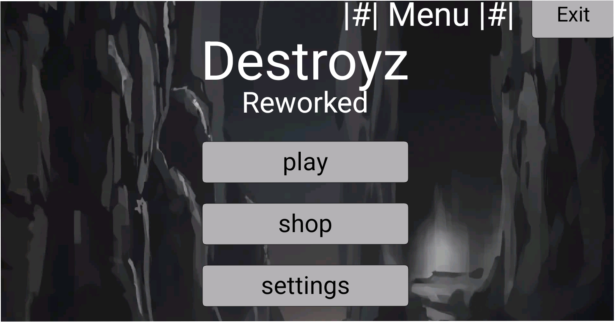

About me
Привет! Наверное ты пришел сюда чтобы узнать больше обо мне. Я не буду томить и сразу буду рассказвать.
Я elliktronic , разработчик игр на языке программирования Processing.
У меня есть 2 завершённые игры. Моей первой завершённой игрой стал Build Game который был сделан на скретче.
Моей второй игрой стал DestroyzOld. Почему в названии приписка Old спросите вы,это потому что игра заброшена + делается ее новая версия DestroyzReworked то-есть переделанная версия игры. Ах да забыл упомянуть что она была сделана на процессинге.
И моя последняя игра на процессинге это JustSandboxGame.Это самач маленькая игра которую я делал.
Поговорим о другом, какой у меня опыт? Опыт программировании есть, но не прям большой, но как вы видите этот сайт был сделан полностью мной без чей либо помощи. Уровень знания языка программирования процессинг у меня на среднем уровне,изначально я его изучал на ПК а потом продолжил на телефоне, на нём я могу написать какую-нибудь простенькую игру на заказ. (это можно обговорить в личных сообщениях в телеграмме/дискорде)
Я не буду обговаривать тут моё имя,возраст, Я особо не хочу чтобы эту информацию знала публика.
Что на счёт игр на заказ? Тут всё зависит какую игру вы захотите. На данный момент я делаю игры/приложения только на языке программирования процессинг чтобы набраться опыта и знаний.
К примеру таже змейка с текстурами(вашими или моими),меню и сохранениями счета будет стоить 50р. Также вы можете предложить другое, по типу сделать систему кнопок которые потом можно будет вставлять в любой проект либо к примеру рандомайзер. Всё что вы хотите но только в рамках нормы пожалуйста :)